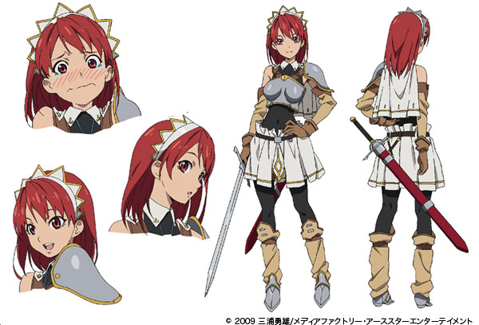

和風おっぱいアーマー？ の伝説を求めて。『鶴姫伝説』を観に行ったった。
公開日：
お前ら、ちょっとこれを見てくれ。この前、大山祇神社で買った『大三島の胴丸』という本の一ページなんだが……
右は重要文化財の「藍韋威肩腰白胴丸・大袖付」。南北朝期の逸品で、かの岡倉天心が修理したそうや。
左は、これも重要文化財の「紺糸裾素懸威胴丸」。ちょっと時代が下って室町時代の作なんやが……ちょっと比べてみて気づくことはないだろうか。
右は割かしイメージ通りのスタンダードな日本鎧って感じやね。『太平記』で武者が着てるのはだいたいこんな感じやろな。
それに引き換え、左はちょっとウエストがキュッと締まっている。そして、胸の部分は妙に厚い感じ。実は左側の方は女性用の鎧なのじゃよ（異説もめっちゃあるけど）。
重要文化財 紺糸裾素懸威胴丸
一領 室町時代黒漆塗り盛り上げの細い本小札（ほんこざね：鎧に用いる小さな板のうち、単に四角いタイプ）で、胴は鉄と革小札で、草摺（くさずり：おちんちんのあたりを守るビラビラ）は鉄小札が混ざらない。威毛（おどしげ：小札を繋げる紐）は紺糸の毛引威しにしている。……社伝に天文十年の大三島合戦に大祝安用（おおほうり やすもち）の息女鶴姫が着用した胴丸と伝えている。
つまり、これは“日本のおっぱいアーマー”なのかもしれないってことなんだよ (ﾉｪ`*)っ))ﾀｼﾀｼ

（西洋風のおっぱいアーマーの例。『聖剣の刀鍛冶』に登場する女騎士・セシリーさん）
ほら、だんだんこの鎧と鶴姫の話に興味がわいてきたやろ？ そんなあなたに朗報や。ちょうど今、坊ちゃん劇場で鶴姫を主人公にしたミュージカル『鶴姫伝説』をやっているらしいで。これは観に行かなあかんやろ。
横河原方面へ
ザックリいうと、伊予鉄は市内を回る環状線（ちんちん電車、一律160円。青色の線がそれだけど、ほんまは本町線っていう盲腸線もある）と、松山市駅から高浜港・伊予市・東温市の三方へ延びる郊外線（距離別運賃、市内線とは別。緑色の線）から成る。
郊外列車は、これまた市内電車（ちんちん電車）に負けず劣らずなレトロな車両やけど、「だが、これがいい」。坊ちゃん劇場のある東温まで、小一時間の短い旅を楽しむ。運賃は確か480円ぐらいやったと思う。終点・横河原の手前にある見奈良という駅で下車して歩く。
坊ちゃん劇場
駅から10分ほど歩くと、“レスパスシティ”というデッカいショッピングモールのようなところに出る。この奥にあるのが、今回目指す“坊ちゃん劇場”（写真にもうっすら写っているやろ？）。西日本初の地域文化発信を目的に建てられた常設劇場なんだそうな。
ちなみに、となりは刑務所やった。わしが悪いことしたら、きっとここに収監されるんやなぁ。
混んでたらイヤなので、わざわざ平日を選んで足を運んだのだけど、あいにくそのひは保育所と小学校の遠足（？）とカブってたみたいで、ちびっこが盛りだくさんだった。きゃんきゃん煩くて、チケット売り場でのやり取りすら覚束ない。劇場はなかなかの規模だったが、こいつらがいるおかげでほぼ満席だった。
まぁ、ちびっこがうるさいのは割と気にならないというか、むしろ好きなんだけど。
ちなみに、ちけっとは“坊ちゃん劇場”のサイトで予約しておくとよい。ちょっとだけ割引されて、3600円ぐらいで観劇できるようになる。
残念ながらここからは撮影禁止なので、興味ある人は自分の目でどうぞ。
こういうミュージカルを観る機会はあまりないのだけど、やっぱ生で観るのはたのしいな。鶴姫役の人をはじめとして、みんな声がでているのにびっくり。途中、和太鼓を叩く人がバチを落としたりなんていうハプニングが起こるのも、生ならではやな（ええんやで、ええんやで）。
ストーリーも割とよかった。個人的な好みでいえば、敵役の大内義隆・陶晴賢サイドの描写ももっと深くやって、鶴姫へ降りかかる不幸ももっとえげつなくして、姫がもっと闇落ちするほうがよかったのだけど、演劇ではそういう複雑すぎるのはむしろ伝わりにくくなるんやろうね。ちびっこも楽しめる感じにするには、あの程度がちょうどいいのだと思う。
それにしても、鶴姫のツンデレぶりよ！ (ﾉｪ`*)っ))ﾀｼﾀｼ
あと、一人何役もやるのな？ 最後のキャストの挨拶の時まで、大内義隆役のおっちゃんがほかもやってやことに気づかなかった。
とにかく、再演のリクエストナンバーワンだったというのも頷ける。また観に行ってもいいなぁ、と思える出来だった。あとでブログ書くために外に掲示されていた展示を写真でメモしていたら、劇場から出てきた子どもたちがわらわら集まってきて「あ、これが鶴姫が着ていた鎧だネ！」「かっこよかったネ！ おもしろかった！」と騒いで。それを聞いたおっちゃんは、とてもホッコリしてしまいました。でも、あんま知らんおっちゃんに声かけたらあかんねんで？ おっちゃんが逮捕されて、そこの刑務所にぶち込まれるからな。
ごはんと温泉
ごはんのあとは、すぐ横にある中華屋さんでお昼ご飯。なんかステーキがのったチャーハンを食べたのだけど、割とおいしかった。
昼間っからビールを2杯飲んでいい気分になったので、ついでに温泉“利楽”も楽しんできた。貸しタオル入れて800円ぐらいだったかな？ こここから松山市駅まで無料バスがでているので、電車賃が浮いたのがちょっとうれしい感じ。
『鶴姫伝説』のその後
- 1543年（天文12年）6月：鶴姫率いる三島水軍、三度押し寄せた大内軍を撃退。以後、鶴姫の消息は知れず。
- 1551年（天文20年）8月：周防国守護代・陶隆房（のちの晴賢）が謀反。大内義隆は自害（大寧寺の変）。陶氏が大内氏家中の実権を握る
- 1554年（天文23年）：義隆の姉を正室とする石見国の吉見正頼と、安芸国の毛利元就が反陶氏の兵を挙げる。晴賢は石見を討つが、その間に安芸は毛利家の手に落ちる
- 1555年（弘治元年）9月：晴賢、約3万の大軍を率いて安芸厳島へ侵攻。毛利氏と村上水軍（伊予守護・河野氏や大三島の大祝氏と同族）に破れ、自害（厳島の戦い）。
劇は1月ぐらいまでやってる模様。わいももう一回観たいので、誘ってくれたら割引券（観に行ったらくれた）あげるで。